Onboarding UI craft — components, micro-interactions and visual tips
First-launch flow of the Wael Academy élève app: splash → Wael's welcome → level (+ section from 2ème) → favourite subject → 3-question mini-game → result → sign-up (phone + OTP). Arabic RTL, Tunisian derja, students 15–19.
This file collects UI craft from Dribbble, Pinterest, Mobbin, case studies and official docs (Apple HIG, Material, Android, web.dev, Rive, LottieFiles). Every tip ends with a Wael fit: line that maps it onto the two skills: wael-design-system-soft (the brand) and wael-gamified (the play skin: lips, 2 px outlines, one lime moment, colour as state, chunky progress, stamps, one burst, a character in empty states, sound on the same frame). When a tip goes against the skin, the line says so and says what to do instead. Conflicts are collected in the last section.
Scope note: the élève space types everything in Cairo (--ui-display/--ui-sans,src/styles/fonts.css) and uses thev2tokens (--v2-ink#172e5b,--v2-brand#0491a5,--v2-cta#8aff6b), not the soft system's Cause/Rubik. Onboarding sits beside the door screens (/connexion,/inscription), so it should use the same v2 tokens andplayhooks and stampdata-space="v2"on its root, the same way the portaled sheets do, so the skin's rules reach it.
Top 15 UI moves for this flow
- Play first, sign up last. Ask for the account only after the result, as "save your score". Duolingo moved sign-up behind the first lesson and reports about a 20 % DAU gain (First Round).
- Keep the splash under 1 s: logo only, no loading bar, skipped on later launches. Android recommends that splash animations stay at or under 1 000 ms (Android).
- Wael enters once with a spring, then only reacts. Each step has its own pose, and his eyes follow the card the student taps.
- Wael changes into the outfit of the subject the student picks. It is the flow's surprise, and it puts the character on screen exactly where the skill allows one: when a matière is in context.
- Use tiles, not a form. A 2×2 level grid, section tiles with glyphs that open in place under the chosen level, and the existing subject badges in a 3-column grid. No dropdowns, no radio buttons.
- Advance on tap for single choices, after a 300 ms selected beat. Keep a visible back button; in RTL its arrow points right.
- Use one chunky progress bar for the whole flow: 12 px, striped, filling from right to left, in three named phases (« إنت » · « المادة » · « اللعبة »).
- Make the question card flat and the answers pressable tiles of at least 56 px. Tapping an answer commits it; there is no separate "Check" step.
- Show right and wrong on the same frame as the sound. A right answer turns lime, its tick pops and
successplays. A wrong answer greys, shakes and playserror, and the right answer is revealed in lime. - Let the student set the pace from one feedback bar with a single lime « الجاي ». No timer and no streak.
- Reveal the result as a big
Num« 2/3 » with three answer plates, oneBurstfrom the score and Wael's reaction pose. No stars, no XP. - Turn the result into a sign-up bridge: a 3-node ladder whose locked 4th node shakes and explains what is behind it.
- On the sign-up screen, show what they keep (level, subject with Wael, score) and lead with the phone field: a fixed +216 prefix and formatting as they type (« 29 340 118 »).
- Build the OTP as one real input drawn as 6 LTR boxes. It takes
autocomplete="one-time-code", a paste fills every box, the resend countdown is written out in words, and an error clears the boxes and refocuses the first. - Make "later" a quiet text button that keeps the session's result. No guilt copy, no nag.
1. Splash and first impression
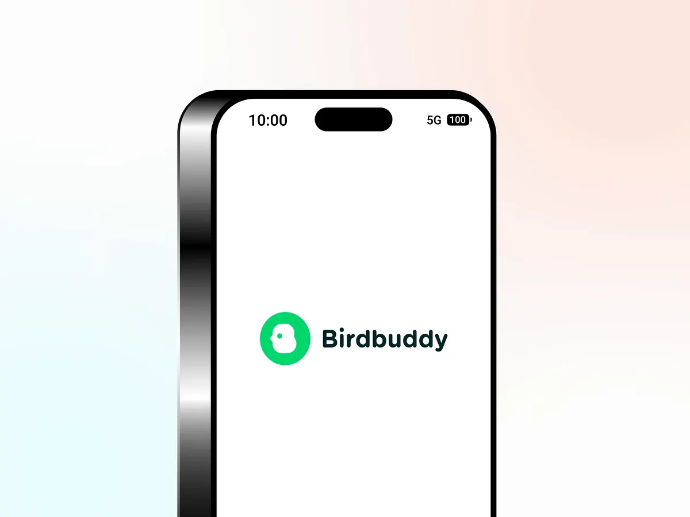
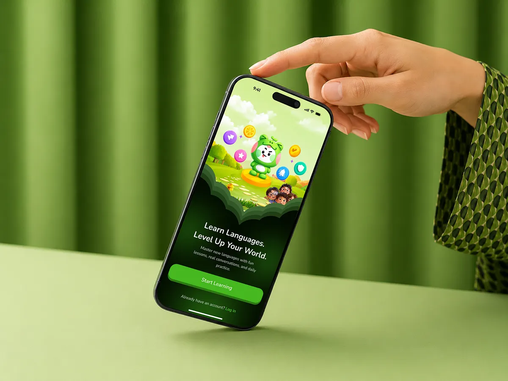
- Keep the splash short and quiet. Android's SplashScreen API puts the icon on a flat background and recommends animations of 1 000 ms or less (Android). Apple goes further: a launch screen is not a place for branding, and it should look like the first screen (HIG Launching). For a web app or PWA, the system splash comes from the manifest (
background_colorplus the icon), so the in-app part is just the move from logo to Wael.- Wael fit: a white
--v2-surfaceground, the logo, and a single 240 ms.riseof the wordmark. Then cut straight to Wael's welcome. Total time on screen is about 600–900 ms, and nothing loops.
- Wael fit: a white
- No fake loading bar. The prototype has no network and the real app's first screen is local, so a bar would only be acting. Rule 9 of the skill bans "fake loading" outright.
- Wael fit: if a real wait ever exists (fetching the programme's questions), use the 12 px
.v2-barwith real progress, never a spinner.
- Wael fit: if a real wait ever exists (fetching the programme's questions), use the 12 px
- Animate the logo once, as an entrance, never as a loop. Draw the mark in (an SVG stroke over about 400 ms), let the wordmark rise, and stop. A splash that plays on every launch gets tiring by the third day.
- Wael fit: only on the very first launch, stored in the onboarding state. Later launches open straight on the app. Under
prefers-reduced-motionthe logo just appears.
- Wael fit: only on the very first launch, stored in the onboarding state. Later launches open straight on the app. Under
- Make the welcome screen the real first impression. Tip 2 in the gallery shows the stronger pattern: the "splash" is the welcome, with the character, one sentence and one button.
- Wael fit: the welcome is a full screen with Wael, one bubble (« أهلا! أنا وائل. في دقيقتين نعرفو مستواك ونلعبو شوية. ») and one lime CTA, « يلّا نبداو ». This is the screen's only lime moment.
2. The mascot — Wael
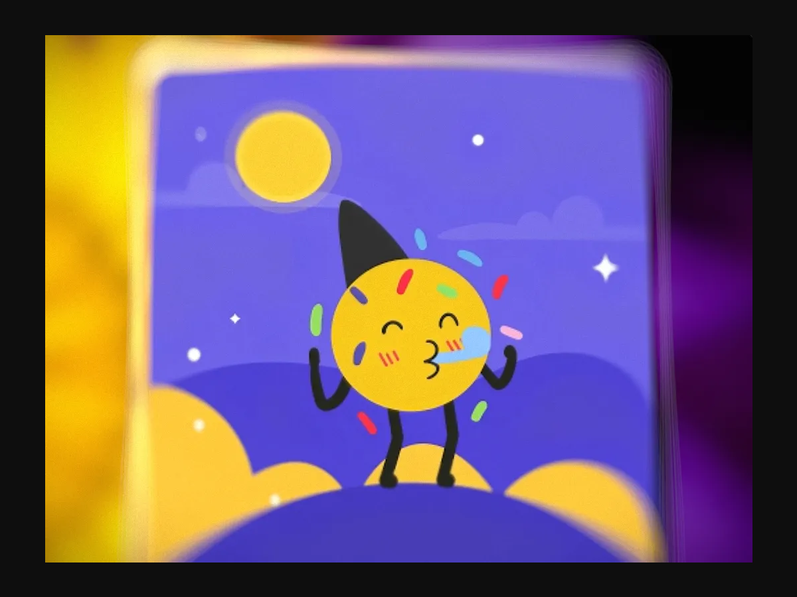
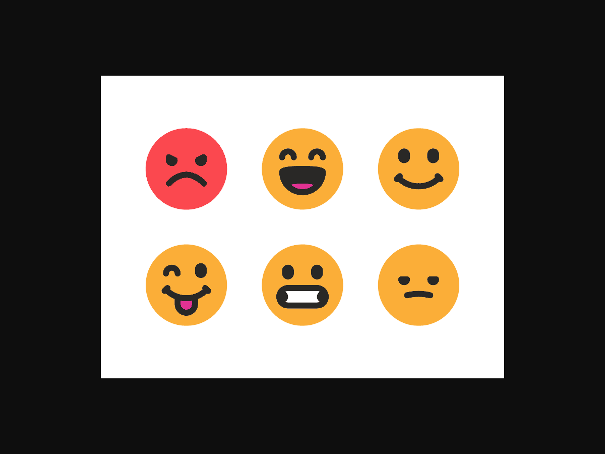
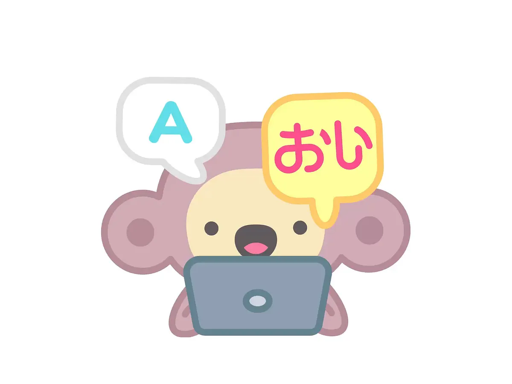
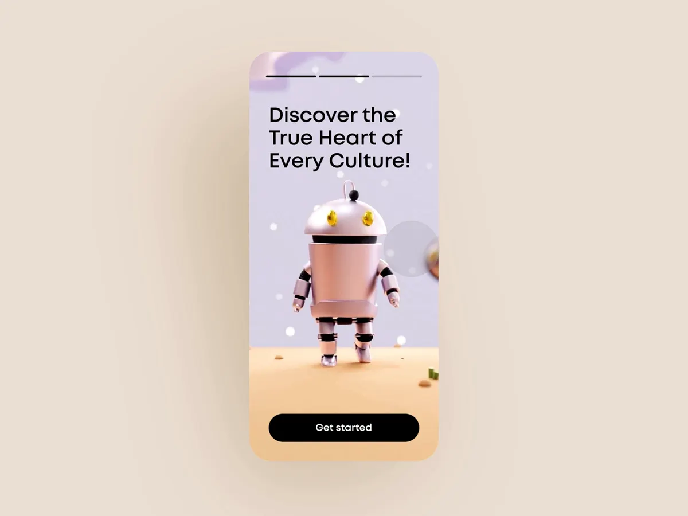
- Place Wael in the upper third and keep the thumb zone for choices. On a 390 × 844 phone the reliable layout is Wael at 112–140 px near the top, his bubble beside him on the reading side, and the tiles and CTA in the bottom half. Duolingo's onboarding uses the same split: Duo small at the top, the choices below (GoodUX).
- Wael fit: the size matches
PanelEmpty's character (112–128 px). In RTL the bubble sits on the left of Wael, with its tail pointing right toward him, because his face is where reading starts.
- Wael fit: the size matches
- One pose per step, chosen for what the step asks. Welcome: waving. Level: curious, head tilted. Section: nodding. Subject: dressed for the matière. Question: focused. Right answer: fist up. Wrong answer: an encouraging shrug. Result: proud. A pose sheet like gallery tip 4 is the brief to give the illustrator.
- Wael fit: the skill says there is no neutral Wael: every portrait is dressed for a matière, and a neutral Wael is listed as "to commission". Splash, welcome, level and section therefore need that commission, or they use the logo and the matière glyphs until the subject is picked. *Conflicts with the skill as it stands*: see the last section.
- Wael reacts to the choice; the choice doesn't wait for Wael. Tap a tile and, on the same frame, Wael's eyes turn to it. The bubble updates 120 ms later (« باك؟ عام كبير. نعاونوك. »). Make the bubble a reaction to the tap, not a gate in front of it.
- Wael fit: the eyes pipeline already makes Wael's eyes follow the pointer (
wael-subject-eyes,Eyes.tsx). Point the gaze at the selected tile's rect instead of the cursor. Never add an extra tap just to dismiss Wael.
- Wael fit: the eyes pipeline already makes Wael's eyes follow the pointer (
- Pop the bubble in; don't type it out. A typewriter effect reads as "wait for me". If you use one, run it at about 40 characters per second with tap-to-finish, and keep each bubble to one line of 30–50 characters.
- Wael fit: the skin allows nothing to animate on mount except
.rise, and Wael never "speaks". Show the bubble withv2-pop(scale .6 → 1.15 → 1, 320 ms), with its text already in place. A typewriter needs a written skin amendment.
- Wael fit: the skin allows nothing to animate on mount except
- Lip-sync only when he really talks. Duolingo's characters use one mouth shape (viseme) per sound, driven by Rive state machines, but only because the audio is real (Duolingo blog, Rive × Duolingo). Silent text with a moving mouth looks broken.
- Wael fit: skip it. The face belongs to the eyes pipeline, and the skill lists eye expressions as out of scope.
- Idle: blink, don't bob. An idle loop (breathing, floating) pulls the eye away from the choices. A single blink or glance every few seconds feels alive without distracting.
- Wael fit: rule 13 says nothing loops except the live halo, so even a blink loop needs an amendment. In-system alternatives: the eyes following the finger (reactive, not a loop) and the
.v2-squashwhen Wael himself is tapped.
- Wael fit: rule 13 says nothing loops except the live halo, so even a blink loop needs an amendment. In-system alternatives: the eyes following the finger (reactive, not a loop) and the
3. Choice screens — level, section, subject
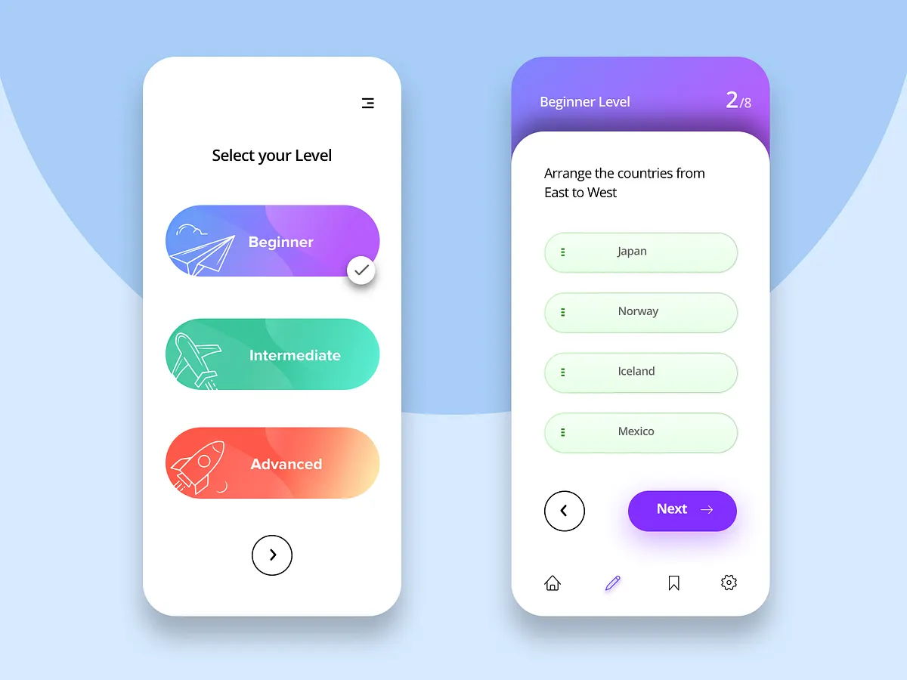
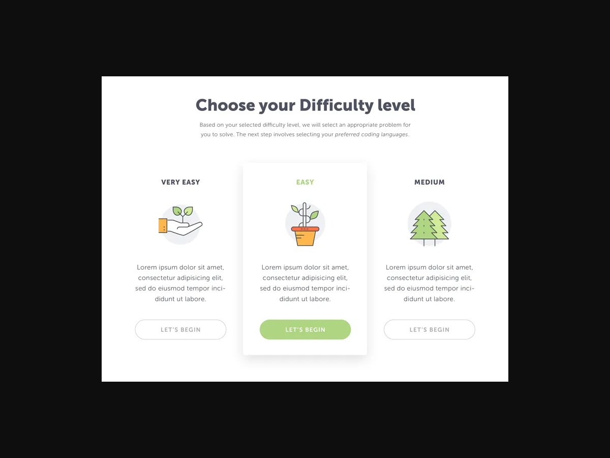
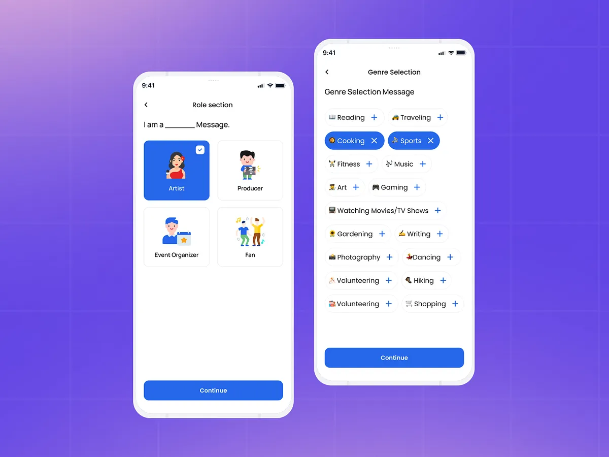
- Level: four big tiles, with the number as the hero. « 1 أولى » · « 2 ثانية » · « 3 ثالثة » · « باك », in a 2×2 grid on the phone and a row of 4 from
md. A big number at 900 weight is faster to scan than words (gallery tips 7–8).- Wael fit: each one is a
tileClassbutton (2 px border, 3 px lip). The chosen one turns lime with its 4 px--v2-edge-ctalip and navy text: the screen's one lime moment. Digits go in<bdi dir="ltr">,data-uisfx="select".
- Wael fit: each one is a
- Section: open it in place, under the level, rather than on a new screen. Picking 2ème, 3ème or Bac folds the level grid into a summary chip (« ثانية ثانوي · بدّل ») and lets the section tiles
.riseunderneath. That makes it one question with a follow-up, not a form with two fields.- Wael fit: the chip becomes a
.v2-btn(white, so the lime moves to the section). The tiles take the seed names: 2ème has 4 (علوم · آداب · اقتصاد وخدمات · إعلامية), and 3ème and Bac list 6 inyears.json(رياضيات · علوم تجريبية · اقتصاد وتصرّف · آداب · علوم تقنية · علوم إعلامية). The official seventh, رياضة, is missing from the seed: add it or decide to leave it out. Fold and unfold playexpand/collapse.
- Wael fit: the chip becomes a
- Make seven sections feel like a set, not a form. Use a 2-column grid of tiles, each with a 40 px glyph plate, a two-word label and no helper text. Order them by size of population, not alphabetically: in 2026, économie-gestion had the most Bac candidates, then sciences expérimentales, then lettres (AllAfrica). If the count is odd, the last tile spans both columns.
- Wael fit: a
.v2-plate-style 40 px glyph square with lucide icons (Sigma, FlaskConical, Cog, Code, ChartLine, BookOpen, Dumbbell). The plates stay in ink and brand tones; colour belongs to state, so don't give each section its own hue.
- Wael fit: a
- Subject: reuse the matière badges, eyes and all. The prototype already has a character badge per subject (
subjects.tsx), and its eyes follow the pointer. A grid of those badges, filtered to the chosen level and section, is the most on-brand picker possible. Picking one is the moment Wael changes outfit.- Wael fit: the badge sits in a
tileClasstile with--v2-lip = subjectTint().dot(the existing subject card recipe) and does the.v2-squashon press. The chosen tile turns lime. Playsselect.
- Wael fit: the badge sits in a
- Tap-to-advance or a Continue button? For a single choice that is cheap to undo, advance on tap: hold the selected state for about 300 ms so the student sees the choice register, then slide on. For a multi choice, show a Continue button. All three questions here are single-choice, so none needs a button, and the screen's lime stays on the selected tile.
- Wael fit: the 300 ms beat covers the 80 ms press, the 180 ms spring and a short hold. The step move plays
forward. Back (top start, arrow pointing right) playsbackand restores the previous selection.
- Wael fit: the 300 ms beat covers the 80 ms press, the 180 ms spring and a short hold. The step move plays
- Selected state: change at least two things, and colour can't be the only one. Fill, lip and a corner check plate (gallery tips 7 and 10). Students in a sunny schoolyard won't read a tint change alone.
- Wael fit: lime fill + 4 px lip + a 24 px
.v2-tickthat pops in 320 ms. Setaria-pressed="true"on the tile.
- Wael fit: lime fill + 4 px lip + a 24 px
4. Progress through onboarding
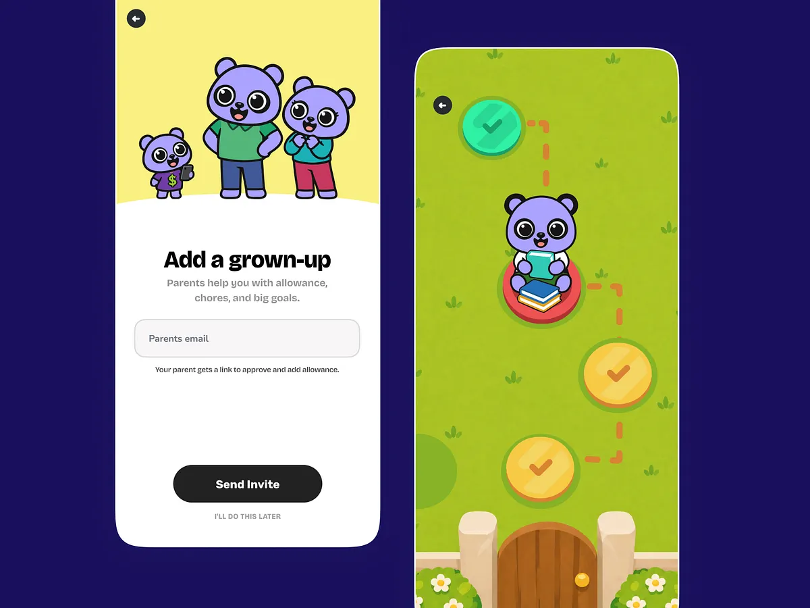
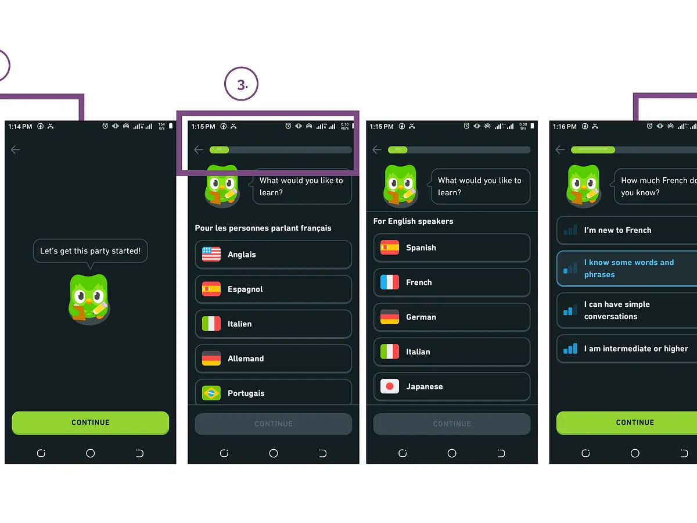
- Use a bar, not dots. Dots suit 3–5 equal steps you can swipe through. This flow has steps of different weight (one tap versus three questions), so one continuous bar that grows by phase is clearer (gallery tip 12).
- Wael fit: a
.v2-bar(12 px, lime fill, inset stripe, width transition 500 ms) under the back button. Use real fractions only: level 1/6, section 2/6, subject 3/6, then questions 4–6. Never pad it.
- Wael fit: a
- In RTL the bar fills from right to left. Apple: flip "controls that show progress from one value to another" (HIG Right to left).
- Wael fit: under
dir="rtl"a flex track with the fill as its first child already starts at the right. Never set a hardcodedleft: 0.
- Wael fit: under
- During the game, show the answers in the bar. Three segments, one per question, coloured by outcome after each answer: lime for right, grey for missed. The student sees their score building without a separate counter.
- Wael fit: colour as state: lime = done and right, grey = past and missed. Segments are 12 px with 4 px gaps. The segment that fills plays its 500 ms width transition on the same frame as
success/error.
- Wael fit: colour as state: lime = done and right, grey = past and missed. Segments are 12 px with 4 px gaps. The segment that fills plays its 500 ms width transition on the same frame as
- Save the map for the end. A path is great storytelling (gallery tip 11), but a map for 6 steps is ceremony. Spend it on the result screen, where a 3-node ladder with a locked 4th node points to "the rest" (section 6).
- Wael fit: reuse
.v2-ladderwithdata-state(done/current/locked). The locked node is dashed, ink/50, and shakes withblocked.
- Wael fit: reuse
- Name the phases, not the numbers. "Step 4 of 9" invites them to count how much is left. Three short labels under the bar (« إنت » · « المادة » · « اللعبة ») say what is coming.
- Wael fit: labels at 700 weight,
text-v2-ink/60. The current phase goes to 800 and full ink. No chips: they would be a second lime candidate.
- Wael fit: labels at 700 weight,
5. The mini-game
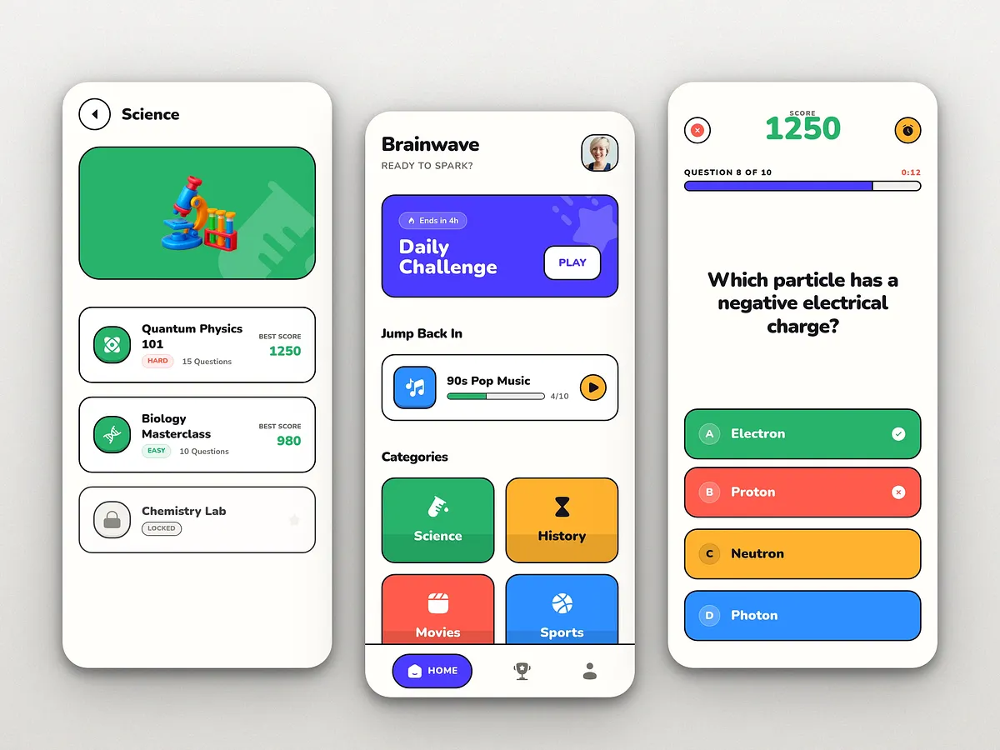
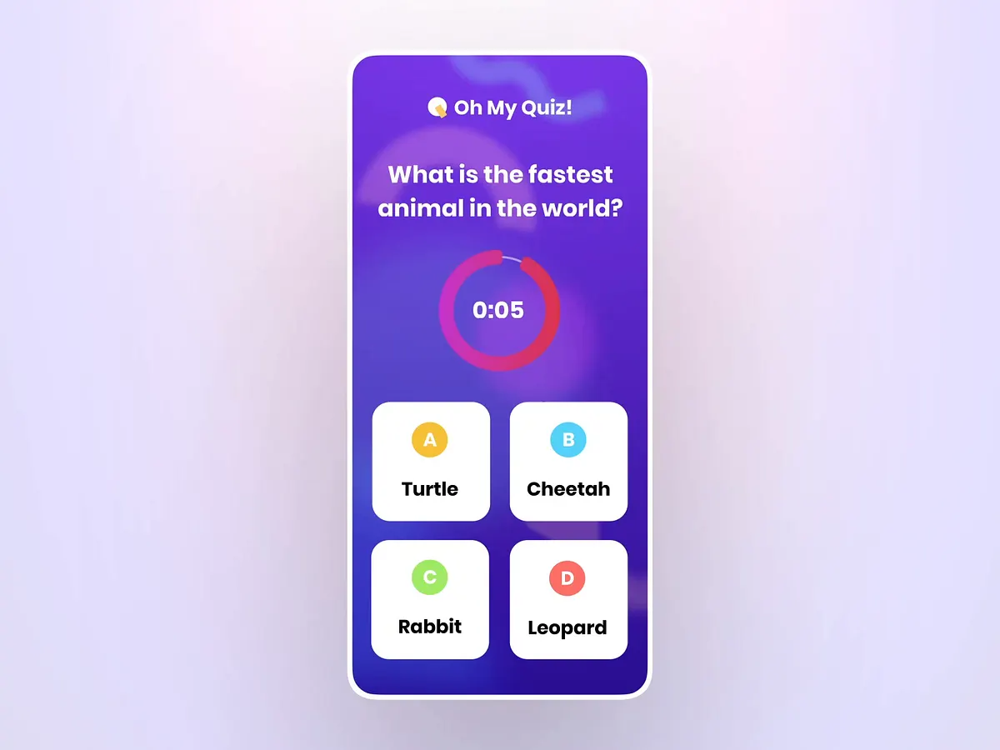
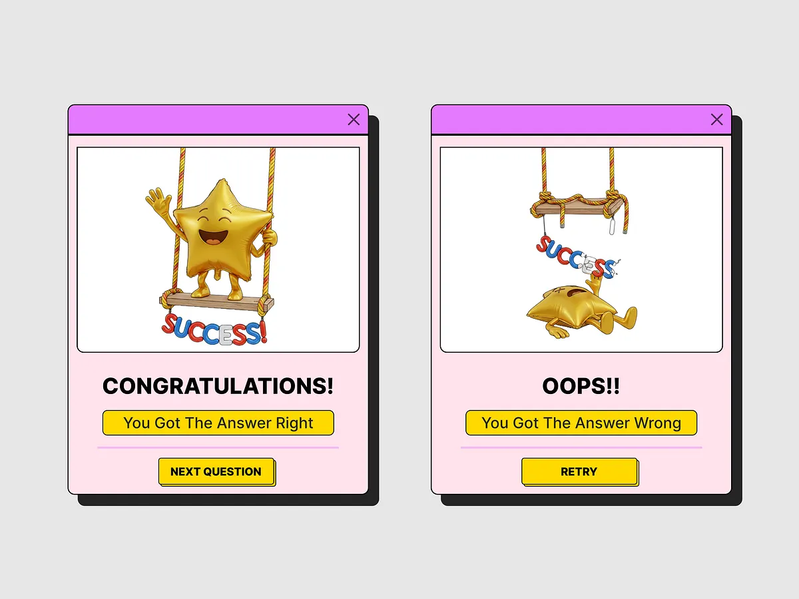
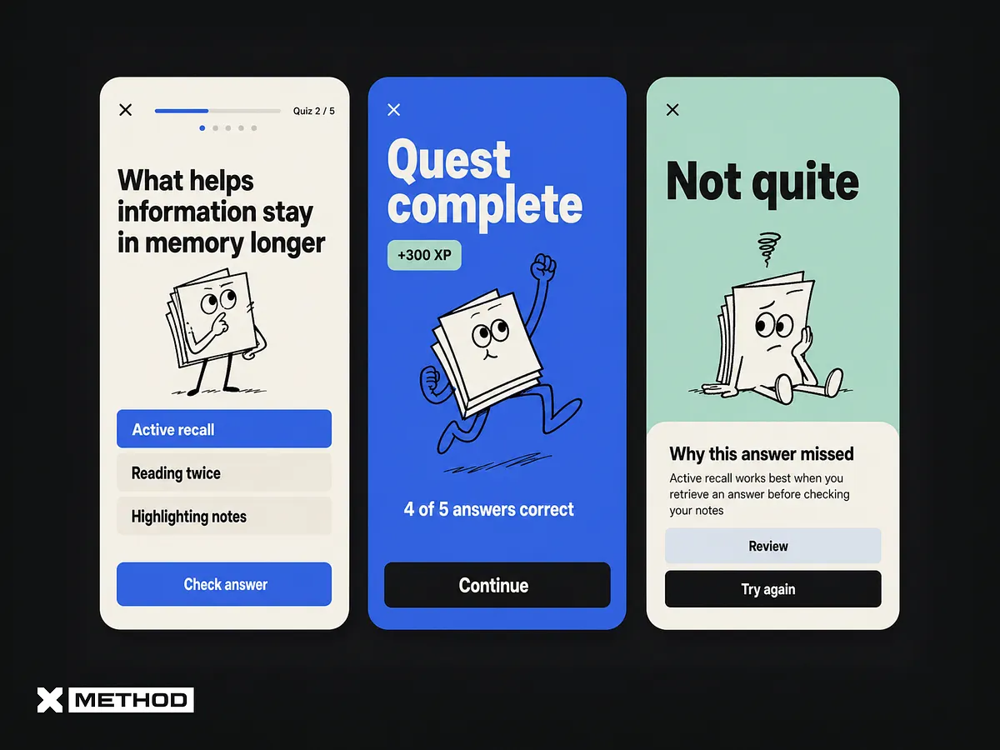
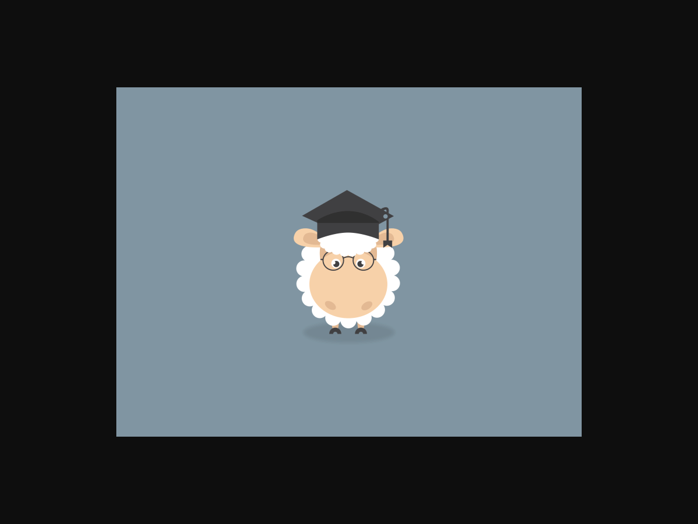
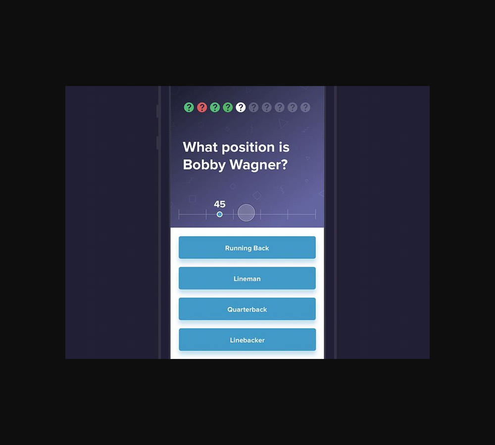
- Question card at the top, answers at the thumb. The question sits in a flat card at the top: the counter « 1/3 », the subject chip, the question at 18–20 px/800. The 2–4 answers are stacked as full-width tiles in the bottom half. Use a 2×2 grid only for very short answers (numbers, one word).
- Wael fit: the question card is a
.v2-panel(flat, 2 px border). Answers aretileClasstiles, at least 56 px high, labelled أ · ب · ج · د in a 28 px plate at the start edge. Wael (focused pose, about 72 px) sits beside the counter, not in the answer area.
- Wael fit: the question card is a
- Tapping an answer commits it. Duolingo's flow (select, then "Check") is good when answers take building. For single-choice MCQs it adds a tap and a moment of doubt. With 3 questions, commit on tap and give the student the pace afterwards (the next tip).
- Wael fit: the press is the shared 80/180 ms lip collapse. Feedback lands on release, on the same frame as the cue.
- Right answer: lime, tick pop, sound, all on one frame. The tile turns lime with its 4 px lip, a 24 px tick plate pops (320 ms),
successplays, and Wael switches to the fist-up pose.- Wael fit: lime here means "done and right", which is exactly its meaning in the skin.
sfx("success")goes in the same handler that sets the state. No burst: the one burst is saved for the result.
- Wael fit: lime here means "done and right", which is exactly its meaning in the skin.
- Wrong answer: grey, shake, then reveal the right one. The chosen tile shakes (±4 px, 320 ms) and settles grey with a ✕ plate,
errorplays, and the right answer turns lime at the same moment so nobody is left guessing (gallery tip 16 explains why; tip 15 makes "oops" a full card).- Wael fit: the skin keeps red for "live" (rule 7), so the wrong tile goes to grey = past (ink/50, no lip) rather than red. That is in-system and still readable thanks to the shake, the ✕ and the wording. A red "wrong" needs a skin amendment: a derived
--v2-wrongbuilt from--v2-live-soft. *Flagged as a conflict.*
- Wael fit: the skin keeps red for "live" (rule 7), so the wrong tile goes to grey = past (ink/50, no lip) rather than red. That is in-system and still readable thanks to the shake, the ✕ and the wording. A red "wrong" needs a skin amendment: a derived
- Explain in one line, then hand over the pace. A feedback bar slides up from the bottom with a one-line verdict (« برافو! » or « قريب… الجواب الصحيح: ب ») and one lime « الجاي ». Never auto-advance after a wrong answer: the student needs a second to read the right one.
- Wael fit: the feedback bar is a flat
.v2-panelpinned above the safe area (pb-safe), with.v2-ctaas the screen's single lime action. That CTA appears in the frame after the answer tile has settled, so two limes never compete at once.forwardon tap. At most one exclamation mark per screen.
- Wael fit: the feedback bar is a flat
- No timer, no streak, no combo. A countdown turns a diagnostic into a test and punishes slow readers (gallery tip 14 shows the pattern for contrast). A streak in a 3-question game is noise.
- Wael fit: both are banned in the skin (rule 21: no streaks, no timers beyond the real séance clock). To build momentum, use Wael's poses instead: an extra-proud pose on a second right answer in a row is a reaction, not a mechanic.
- Move between questions with a 280 ms slide, in the reading direction. The answered card leaves toward the end side, the next one enters from the start side (from the left in RTL), and its tiles
.rise40 ms apart.- Wael fit: an exit of 200 ms
cubic-bezier(.3,0,.8,.15)and an entry of 280 mscubic-bezier(.05,.7,.1,1)(M3 emphasized accelerate / decelerate). Under reduced motion, a 120 ms crossfade.
- Wael fit: an exit of 200 ms
- Keep formulas left-to-right inside the right-to-left card. Math from the programme (« حل المعادلة x² − 5x + 6 = 0 ») must read left-to-right inside the RTL card.
- Wael fit: wrap formulas in
<bdi dir="ltr">. If KaTeX is needed, it is a capability library that CLAUDE.md allows. Western digits throughout.
- Wael fit: wrap formulas in
--v2-live-soft / --v2-live / --v2-edge-live values but breaks rule 7 ("red only when live"), so it needs a skin amendment.6. The result / reward screen
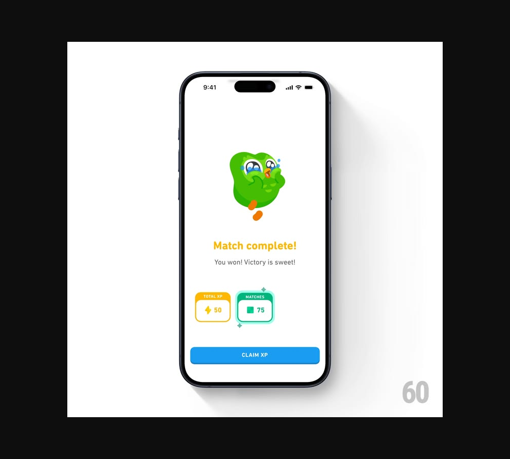
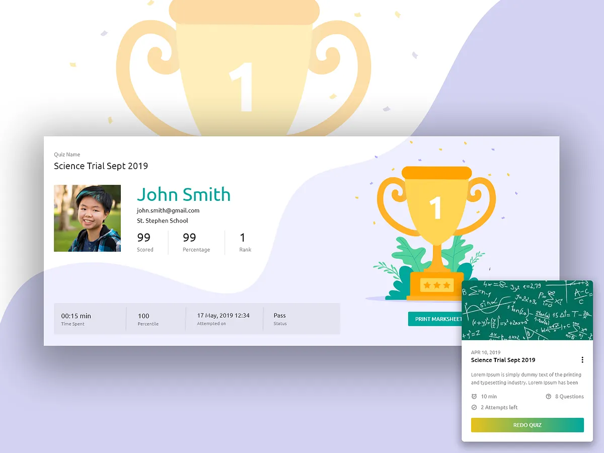
- Reveal the score in a short sequence, about 1.2 s end to end. Wael's proud pose lands (spring, 420 ms). The big « 2/3 » rolls up (300 ms). The three answer plates pop one by one, 120 ms apart. A single burst fires from the number. Then the CTA rises. Duolingo uses the same order: character, title, stats counting up, one button (gallery tip 19).
- Wael fit:
Numfor the score (it rolls on change only, so set 0 first, then the real value),v2-popfor the plates, oneBurst(16 particles, 620 ms, gone by 700) from the number withachievement, and.risefor the CTA. The next action never waits for the burst to finish.
- Wael fit:
- Show the plain score, not stars or rings. Three stars for three questions only restate the score with an invented rating. « جبت 2 من 3 » plus three plates (lime ✓ / grey ✕) is honest and reads at a glance.
- Wael fit: XP, points and levels are banned. If a visual is wanted, a stroke-10 ring filling to 2/3 is in-system (
Ring), but the plates already carry it. Stars: *skip (conflict)*.
- Wael fit: XP, points and levels are banned. If a visual is wanted, a stroke-10 ring filling to 2/3 is in-system (
- One burst, from where the score was earned, never full-screen confetti. Full-screen confetti is a party for everything and so for nothing. A small burst from the score says "this number".
- Wael fit: rule 11 allows one celebration per screen visit, and only for a real completion. Finishing the 3 questions is real session data, so
Burst+achievementfit (notrewardorlevel-up, which are banned). Decide whether 0/3 also earns it: recommended yes, because the completion is real. Wael's pose and the wording change with the score; the burst does not.
- Wael fit: rule 11 allows one celebration per screen visit, and only for a real completion. Finishing the 3 questions is real session data, so
- Let Wael's reaction follow the score, warmly at every score. 3/3 « هكّا! إنت جاهز للباك » · 2/3 « باهي برشا — قريب للكمال » · 1/3 « بداية مليحة، نخدمو عليها مع بعض » · 0/3 « عادي، هاذي بالضبط علاش موجودين ». Never mock, never "don't lose it".
- Wael fit: the tone rules: second person, verbs first, at most one exclamation mark, no guilt framing.
- Make sharing quiet and optional. A small icon button (share) at the top end, which opens the native share sheet (
navigator.share) with a generated card: Wael in the subject outfit plus the score. Teens share screenshots anyway, so give them a card worth sharing.- Wael fit:
iconBtnClass(flat in both skins) playsopen. The share card can reuse the existing.v2-stamplook (« جبت 2 من 3 », tilted −6°). Never a lime button: the lime belongs to the save CTA.
- Wael fit:
- Make the CTA flow into sign-up: "save", not "register". The lime CTA reads « سجّل باش تحفظ نتيجتك » (save your score), with a ghost « عاود العب » (play again) under it. Both lead to sign-up, because replay needs an account. Below the score, a 3-node ladder (✓ ✓ ✕ for the three questions) ends in a dashed, locked 4th node labelled « باقي البرنامج ». Tapping it shakes it and explains in one line.
- Wael fit:
.v2-cta+.v2-cta-ghost;.v2-ladderwithdata-statefor the nodes; the locked node takesdata-locked="true"+useShake+blocked. It explains in words and leads to sign-up, not to العروض, which is the same rule 8 with a different destination.
- Wael fit:
7. The sign-up screen that converts
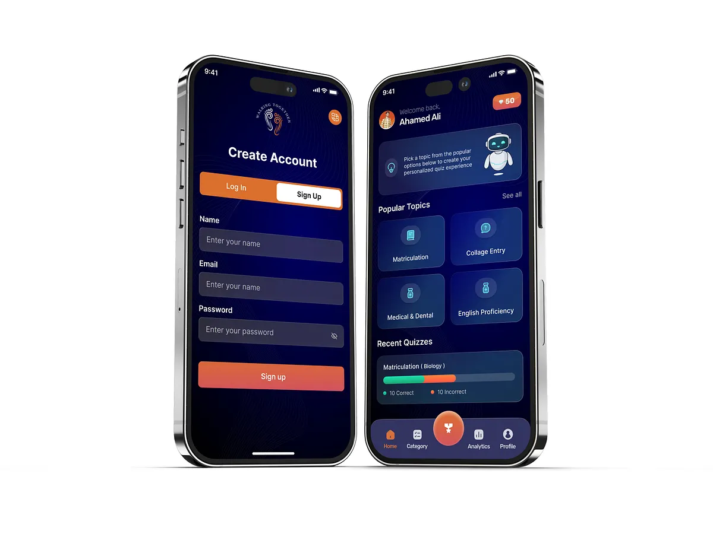
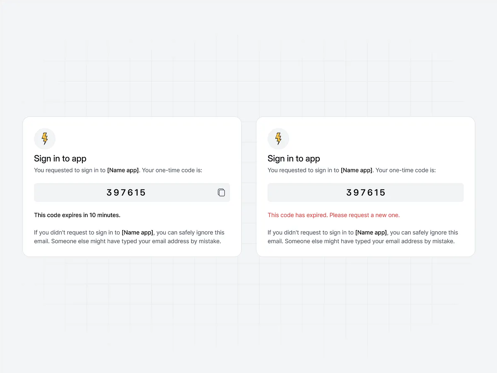
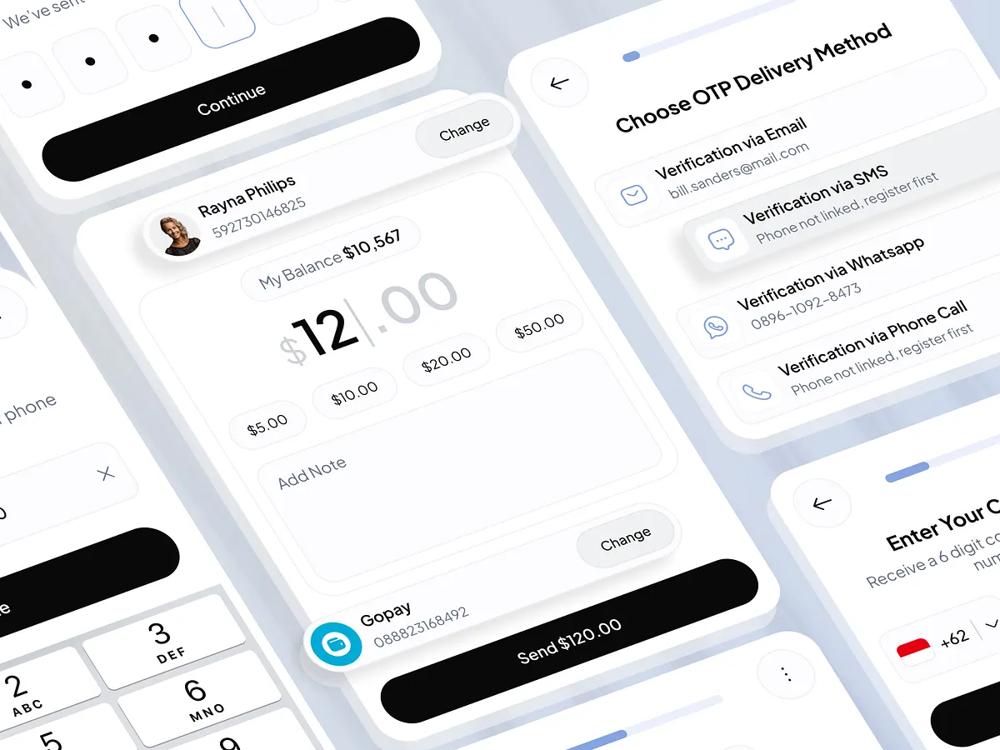
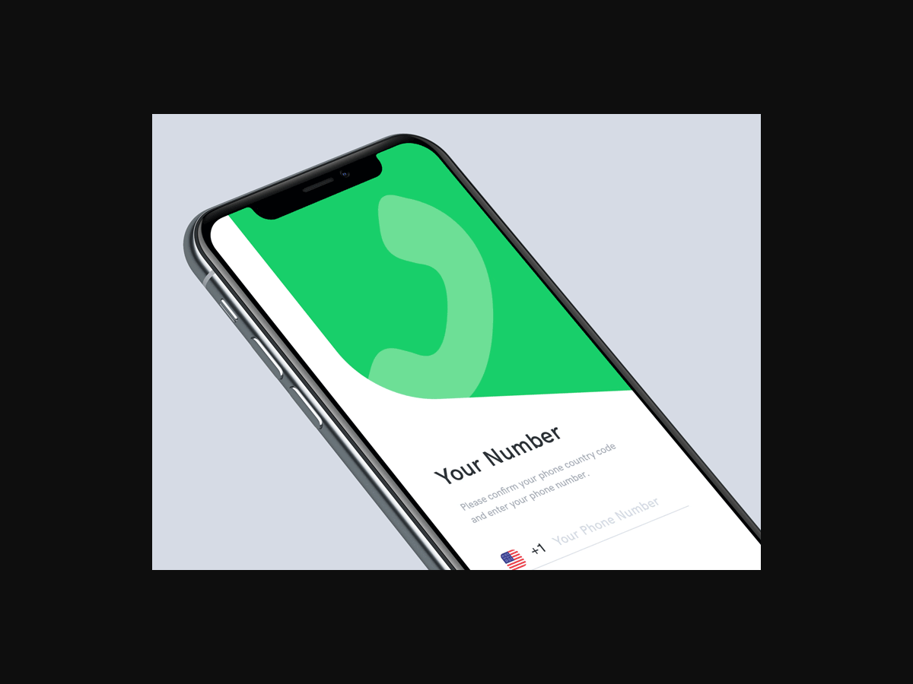
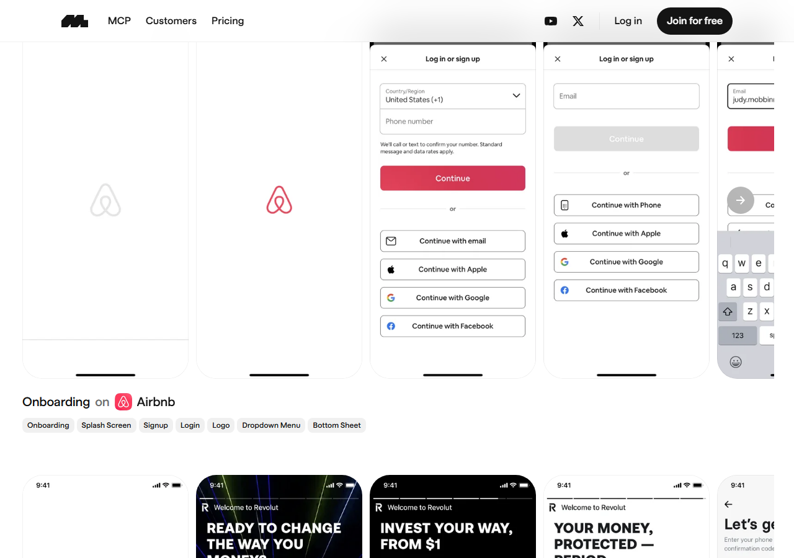
- Start with what they keep. Above the form, a compact "keep card" shows their level chip, Wael in the chosen subject's outfit and the « 2/3 » with its three plates. Below it, one line: « سجّل بنومروك وكل هذا يتحفظ ». This turns sign-up from a toll into the next step of something they already own (Duolingo's "save your progress", First Round).
- Wael fit: a flat
.v2-panelwith the subject character at about 72 px (honest: the matière is in context), the score inNum(no roll, since it is the first value) and plates as on the result screen. Never write "don't lose…".
- Wael fit: a flat
- Phone first, with +216 fixed and live formatting. One field,
type="tel",inputMode="tel",autocomplete="tel-national". The fixed +216 sits at the field's left (the number is an LTR string, even in an RTL form). Format as they type into « 29 340 118 » (2-3-3) and accept a pasted « +216 29340118 ». The prototype already normalises this inauth.ts(normalizePhone).- Wael fit: the field is
dir="ltr"inside the RTL form, its label right-aligned above it. 2 px--v2-lineborder, 3 px brand focus ring at 3 px offset (rule 19). Digits are Western.
- Wael fit: the field is
- Validate inline, but only once the input is complete. Show nothing while they type. At 8 digits, check the prefix: Tunisian mobiles start with 2, 4, 5 or 9. If valid, a small lime tick pops at the field's end. If not, one line under the field: « النومرو هذا ما يظهرش تونسي — ثبّت فيه ». Don't flash an error on the first keystroke.
- Wael fit: the valid tick is the
.v2-tickpop +success. The invalid line usestext-v2-inkwith an icon, not red text (red means live).errorplays only on submit.
- Wael fit: the valid tick is the
- OTP: one real input, drawn as 6 boxes. Use a single
<input inputmode="numeric" autocomplete="one-time-code" maxlength="6">behind 6 visual boxes. That gives SMS autofill on iOS and Android and paste of the whole code for free, and backspace behaves (web.dev, Twilio). Auto-submit at the 6th digit, with no "Verify" button needed.- Wael fit: the boxes are 48 × 56, 2 px border. The active box takes a 3 px teal border and a blinking caret (the caret is the system's, so it isn't a skin loop). Filled boxes go navy 2 px. The boxes stay LTR: the first digit is on the left even in RTL (HIG: "don't reverse the order of numerals").
pasteplays on paste andconnectwhen the account is made (as the door already does).
- Wael fit: the boxes are 48 × 56, 2 px border. The active box takes a 3 px teal border and a blinking caret (the caret is the system's, so it isn't a skin loop). Filled boxes go navy 2 px. The boxes stay LTR: the first digit is on the left even in RTL (HIG: "don't reverse the order of numerals").
- Write the resend countdown out in words. « ما وصلكش الكود؟ تنجم تطلبو مرّة أخرى بعد 0:42 », which turns into a link « ابعثهولي مرّة أخرى » at 0. Never a disabled button with no explanation (Visa pattern). Offer « بدّل النومرو » next to the masked number.
- Wael fit: 60 s, which is
RESEND_AFTER_S, the real API's value. The countdown is<Num>in<bdi dir="ltr">and playssendon resend. The existing « ما وصلنيش الكود » escape hatch (expand) stays.
- Wael fit: 60 s, which is
- Wrong code: shake, clear, refocus. The boxes shake (±4 px, 320 ms), clear, and the first box takes focus. One line explains: « الكود هذا موش صحيح — جرّب مرّة أخرى ». An expired code gets its own wording, as in gallery tip 22.
- Wael fit:
useShakeon the box row anderroron the same frame.
- Wael fit:
- Social buttons go second, under « ولّا ». Google (most Tunisian teens have an Android phone and a Gmail), Facebook maybe, and Apple only on iOS. Stack them full-width under the phone CTA (gallery tip 25). Phone stays first because it is the Tunisian identifier and what the academy uses for contact.
- Wael fit: use the providers' own button styles (white or black, their logo). Don't put the lip on them: their branding rules forbid restyling, and the lime stays on the phone CTA.
- "Later" is a quiet text link. « مش توّا » under the buttons. It keeps the session result in memory and moves on, and the save prompt comes back at the next meaningful moment (replaying, opening a lesson), never on a timer. Duolingo keeps soft walls early and a hard wall later (First Round).
- Wael fit: a plain text button in
text-v2-ink/70that playsclose. Never guilt copy: the skill's "never nagging" applies.
- Wael fit: a plain text button in
8. Motion
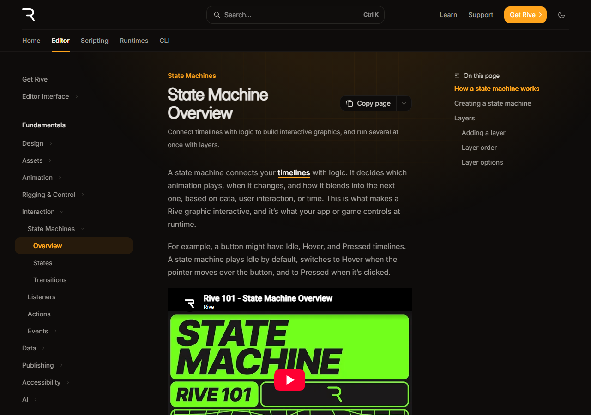
Durations and easing. UI motion lives between 100 and 500 ms (NN/g). Material 3's tokens run in 50 ms steps, from short1 at 50 ms to long2 at 500 ms (M3 easing and duration). Use the skin's values first and M3's for anything the skin doesn't cover:
| Move | Duration | Easing | Source |
|---|---|---|---|
| Press / release (every lip) | 80 ms / 180 ms | linear / cubic-bezier(.34,1.56,.64,1) | play.css shared block |
| Selected beat before auto-advance | ~300 ms hold | — | this doc |
| Screen enters / leaves | 280 ms / 200 ms | cubic-bezier(.05,.7,.1,1) / cubic-bezier(.3,0,.8,.15) | M3 emphasized decelerate / accelerate |
| Wael lands (entrance, pose change) | 420 ms | spring, about 15 % overshoot | this doc; linear() spring |
| Bubble pop · tick pop · plates | 320 ms | scale .6 → 1.15 → 1 | v2-pop |
| Wrong-answer / wrong-code shake | 320 ms | ±4 px | .v2-shake |
| Progress bar segment | 500 ms | width transition | .v2-bar |
| Score roll | 300 ms | cubic-bezier(.22,1,.36,1) | Num |
| Burst | 620 ms, removed at 700 | — | Burst |
| List stagger | 240 ms, 40 ms apart | — | .rise |
- Use springs through CSS
linear(), not a library. Every current browser supportslinear()easing, so a spring curve can be baked into one CSS timing function (Josh W. Comeau, MDN). Material 3 Expressive also moved its motion to springs (M3 motion).- Wael fit: the skin already approximates a spring with
cubic-bezier(.34,1.56,.64,1). Add one--spring-land: linear(...)token for Wael's landing and nothing else. Motion (the library) was explicitly dropped in favour of CSS.
- Wael fit: the skin already approximates a spring with
- Choreograph the order: who moves first says what matters. Each onboarding screen enters in the same order: Wael (0 ms), then the bubble (+120 ms), then the tiles (+200 ms, 40 ms apart), then the bar's segment. Everything is settled within about 700 ms. Exits are faster and all at once.
- Wael fit:
.risewith--ihandles the tiles. Nothing else animates on mount (rule 13): Wael's entrance and the bubble pop are the onboarding amendment to put to the skin.
- Wael fit:
- Animate only
transformandopacity. These are composited and stay at 60 fps on a mid-range Android (web.dev). The lip is abox-shadowbut has no blur, so it is cheap. Don't animatewidthexcept on the progress bar, which the skin already does.- Wael fit: the lip collapse uses
translate+box-shadow(zero blur), as inplay.css.
- Wael fit: the lip collapse uses
- Reduced motion: keep the meaning, drop the movement. Under
prefers-reduced-motion: reduce: screens crossfade in 120 ms, Wael appears without a bounce, there is no shake, pop, roll or burst, and the bubble text is there at once (web.dev). The answer still turns lime and the sound still plays.- Wael fit: this is
play.css's job. Every new keyframe (Wael landing, the step slide) joins its reduced-motion block. Never re-enable motion inline.
- Wael fit: this is
- Tools: CSS for the UI, SVG for Wael today, Rive if he gets a body.
- CSS for everything in the UI: lips, pops, shakes, bars, slides. It is already the skin's whole toolkit and costs nothing at runtime.
- SVG + CSS for Wael's poses now: swap pose SVGs per step, squash with
.v2-squash, and keep the eyes pipeline. Cheap, crisp and on-brand. - Rive if Wael becomes a real animated character (blend between poses, react to inputs such as
mood,lookAt,talking). Its state machine is built for this (Rive docs), and Duolingo uses it for its cast (Rive × Duolingo). It needs a WASM runtime, so lazy-load it on the onboarding route only. The comparisons are mostly vendor-written, so benchmark on a mid-range Android before committing (Callstack, LottieFiles). - Lottie (dotLottie) for a one-off linear piece made in After Effects, such as an animated logo. For this flow, CSS and SVG do the splash just as well with no extra runtime.
- Wael fit: CLAUDE.md allows a capability library when a screen truly needs one, but Rive is a new dependency and would sit beside the eyes pipeline, which owns Wael's face. *Decide before commissioning.*
9. Sound and haptics
- Sound on the frame of the visual, always. The ear notices a lag of 50–100 ms. Call
sfx()in the same handler that sets the state, never in an effect that runs after render.- Wael fit: rule 12 and
docs/sound-effects.md§4. Every new clickable getsdata-uisfx, then runnpm run check:sounds.
- Wael fit: rule 12 and
| Moment | Visual | Cue (uisfx) |
|---|---|---|
| First tap anywhere (unlocks Web Audio) | — | none: audio can't autoplay before a gesture anyway |
| « يلّا نبداو » | lip collapses | forward |
| Level / section / subject tile | lip collapses, tile turns lime | select |
| Section grid opens · level chip reopens | grid rows move | expand · collapse |
| Bar segment fills | 500 ms width | progress-step (exists in uisfx; new to the space, so add it to §4) |
| Back | slide back | back |
| Right answer | lime + tick pop | success |
| Wrong answer | shake + grey, right one turns lime | error |
| « الجاي » | slide | forward |
| Result: score settles + burst | Num + Burst | achievement (once) |
| Locked 4th node | shake | blocked |
| Share | sheet opens | open |
| OTP paste · resend · account made | boxes fill · countdown resets · move on | paste · send · connect |
| Wrong code | shake + clear | error |
| « مش توّا » | sheet closes | close |
| Never | reward, level-up, streak, badge, bonus (they promise mechanics that don't exist) |
- Make haptics a progressive enhancement, not the signal.
navigator.vibrate()works in Chrome on Android, but iOS Safari doesn't support it (caniuse). Libraries such as WebHaptics fake it on iOS by toggling a hidden<input type="checkbox" switch>, a hack that could break with any iOS release (browser support notes). Once the app is wrapped (Capacitor or a native webview), use the native haptics bridge instead. Patterns: select 10 ms · right answer 20 ms · wrong answer[30, 40, 30]· burst[15, 30, 15, 30, 40].- Wael fit: the skin has no haptics. If added, they go in
sound.tsonly (onefeel(cue)next tosfx(cue), keyed to the same cue names), they follow the same speaker toggle, and they are never used without the matching sound and visual.
- Wael fit: the skin has no haptics. If added, they go in
10. RTL and Arabic
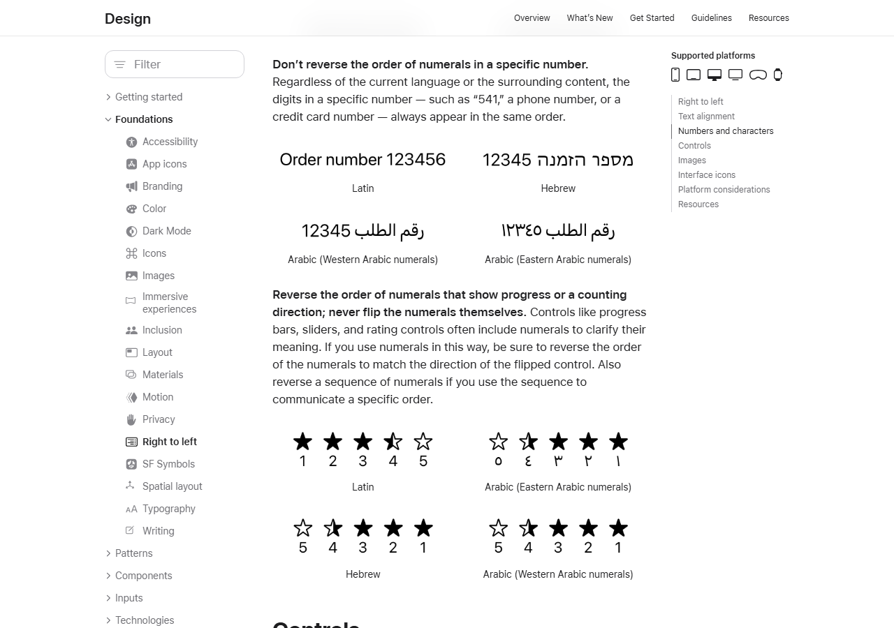
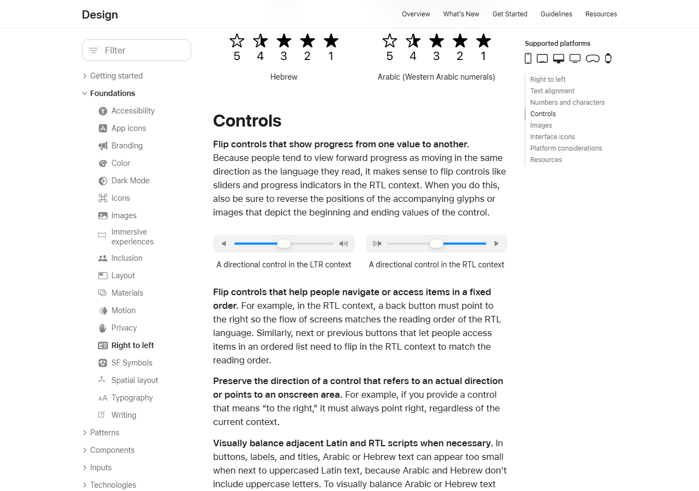
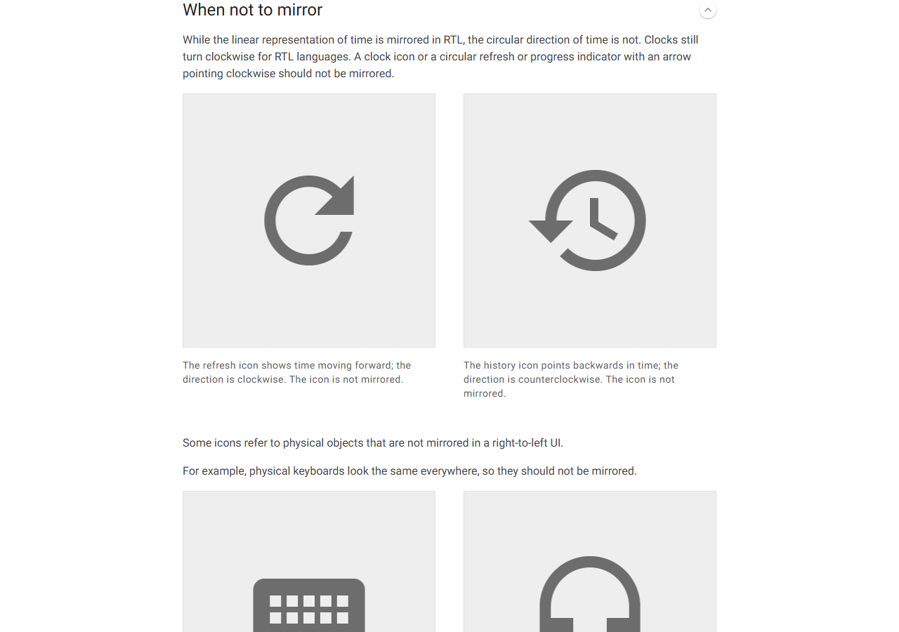
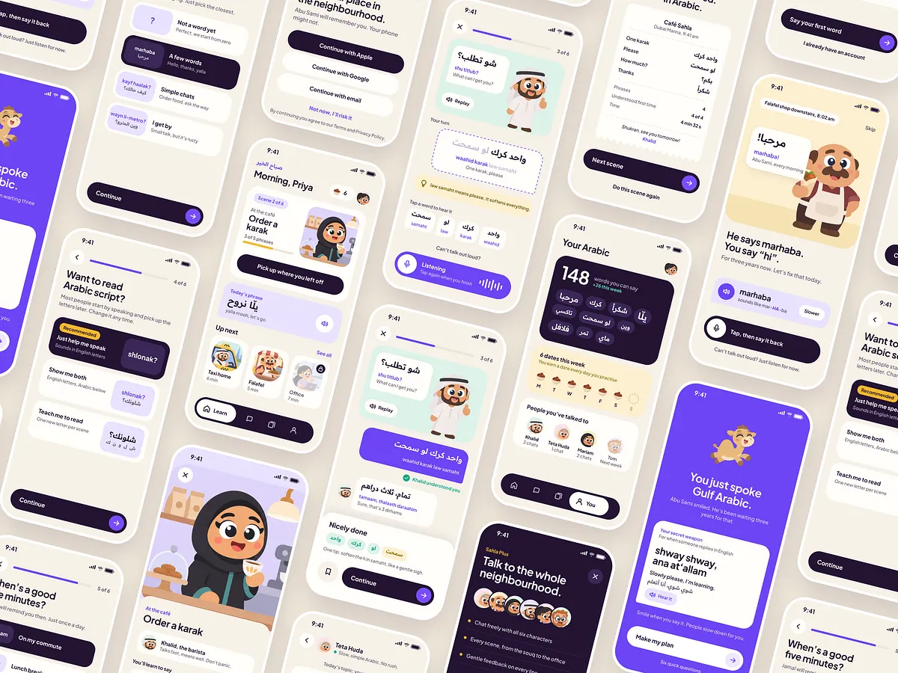
- Mirror the layout, the back button and the progress. Under
dir="rtl": start is on the right, the back arrow points right, progress fills from the right, and the next screen enters from the left. A sequence shown in order (the three answer plates, the ladder) runs right to left (HIG).- Wael fit: logical utilities only (
ps-,me-,start-,end-), as CLAUDE.md requires. The step slide's direction comes from a CSS variable,--dir: -1under[dir="rtl"], rather than from two keyframes.
- Wael fit: logical utilities only (
- Don't mirror these. Checkmarks and ✕ (universal marks), the logo, clocks and the refresh icon (gallery tip 29), media play/pause, the digits inside any number, phone numbers, the OTP boxes, formulas, and Wael himself. Never flip artwork (HIG: "avoid flipping images like photographs, illustrations").
- Wael fit: the ✓ in
.v2-tickstays as it is. The subject badges and Wael are illustrations, so don't flip them. If Wael must face the content, commission a facing-left pose instead of usingscale-x-[-1].
- Wael fit: the ✓ in
- Use Western digits, isolated. Tunisia uses Western digits (0–9). Wrap every number in
<bdi dir="ltr">so « 2/3 », « 0:42 » and « 29 340 118 » never reorder inside Arabic text.- Wael fit: this is already the skin's tone rule, and
Numrenders<bdi dir="ltr">. Watch Tarif Arabic: it draws digits as Eastern Arabic numerals, which is whyfonts.csssends digits to Cairo.
- Wael fit: this is already the skin's tone rule, and
- Arabic type needs more room. Arabic has tall ascenders and deep descenders and no capitals. Body text at 1.6–1.8 line height, headings at about 1.3, and a size 1–2 px larger than the Latin equivalent. Apple suggests about +2 pt next to capitalised Latin. Never letter-space Arabic, because it breaks the joins.
- Wael fit: Cairo throughout (variable 200–1000: 800 for titles, 900 for numbers, 700 for tiles, 400 for body),
font-synthesis: none, notracking-*on Arabic. Sizes follow the space'scalc(Npx*var(--ts)).
- Wael fit: Cairo throughout (variable 200–1000: 800 for titles, 900 for numbers, 700 for tiles, 400 for body),
- Derja's gender-neutral « إنت » is a gift. Tunisian dialect conjugates the second person singular the same for boys and girls (« تقرا », « تحب », « جبت »). Write every string that way and the flow never has to ask or guess gender.
- Wael fit: the tone rules (second person singular, verbs first) already lead there. Avoid Standard Arabic forms that need « ـين » or « ـي ».
- Mixed-script strings: isolate the Latin. « Bac », « Maths », formulas and "x²" inside Arabic sentences go in
<bdi>so their punctuation doesn't jump to the wrong end.- Wael fit: the same
<bdi>rule. Prefer the Arabic names the seed already uses (« باك », « رياضيات ») over French in the labels.
- Wael fit: the same
11. Component checklist
| Component | States | Motion | Sound | Built on |
|---|---|---|---|---|
| Splash mark | first launch · later launch (skipped) · reduced motion | wordmark .rise 240 ms; total ≤ 900 ms; no loop | none | logo SVG on --v2-surface |
| Wael stage | per-step pose (wave, curious, nod, subject outfit, focus, right, wrong, proud) · gaze target | lands with a 420 ms spring; pose swap 180 ms crossfade; eyes follow the tapped tile | none of his own | pose SVGs + eyes pipeline; neutral pose to commission |
| Speech bubble | one line · two lines max · tail toward Wael (left of him in RTL) | v2-pop 320 ms, +120 ms after Wael | none | flat, 2 px border, 16 px radius |
| Onboarding bar | phase 1–3 · per-question segments (pending · right · missed) | width 500 ms on change | progress-step | .v2-bar, fills from the right |
| Back button | default · pressed · hidden on the welcome screen | press 80/180 | back | iconBtnClass, arrow pointing right in RTL |
| Level tile | idle · hover (hover: hover only) · pressed · selected (lime + tick) · folded into a summary chip | lip collapse; tick pop; 300 ms beat then slide | select | tileClass, Num-sized digit |
| Section tile | idle · pressed · selected · (odd last tile spans 2 columns) | .rise 40 ms stagger as the grid opens | select; grid expand/collapse | tileClass + 40 px glyph plate |
| Subject badge tile | idle · pressed (badge squash) · selected · filtered empty ("no subjects for this section yet", with a glyph) | .v2-squash; tick pop | select | existing subject card recipe, --v2-lip = subjectTint().dot |
| Question card | question n/3 · with a formula · long question (wraps, never truncates) | slides in 280 ms from the start side | none | .v2-panel |
| Answer tile | idle · pressed · right (lime + ✓) · wrong (grey + ✕ + shake) · revealed right · disabled-after-answer (no lip) | 80/180 press; 320 ms pop/shake | success / error | tileClass, أ ب ج د plate |
| Feedback bar | right · wrong with explanation · last question (CTA « شوف النتيجة ») | slides up 200 ms after the tile settles | CTA forward | flat panel + .v2-cta, pb-safe |
| Score reveal | 0–3 / 3 · reduced motion (static) | Wael lands → Num roll → plates 120 ms apart → one burst → CTA rises | achievement once | Num, .v2-tick, Burst |
| Result ladder | ✓ / ✕ nodes · locked 4th node | locked node shakes 320 ms | blocked | .v2-ladder, data-state, useShake |
| Share button | idle · sheet open · unsupported (falls back to copying the link + toast) | none | open | iconBtnClass, navigator.share |
| Keep card | level + section · subject with Wael · score | .rise | none | flat .v2-panel |
| Phone field | empty · typing (grouped 2-3-3) · valid (tick) · invalid (one line) · pasted +216 | tick pop | success on valid; error on submit | dir="ltr" input, +216 fixed prefix |
| OTP field | empty · active box (caret) · filled · pasted · verifying · wrong (shake + clear) · expired | shake 320 ms; boxes fill left to right | paste, error, connect | one input + 6 LTR boxes, autocomplete="one-time-code" |
| Resend timer | counting (« بعد 0:42 ») · ready (link) · changed number | Num per tick | send | <bdi dir="ltr">, 60 s |
| Social buttons | idle · pressed · iOS-only Apple | provider's own; no lip | forward | providers' brand rules |
| Later link | idle · pressed | none | close | plain text button |
| Step transition | forward · back · reduced motion (crossfade) | 280 ms in / 200 ms out, direction from --dir | forward / back | one CSS keyframe pair |
12. Where the tips conflict with the Wael skills
| Tip | Skill rule it hits | Recommendation |
|---|---|---|
| Wael "speaks" in speech bubbles | wael-gamified rule 17: the badge "never speaks or nags" | Amend for onboarding only (Wael may speak in one-line bubbles during first launch), or move the copy into a plain heading next to him |
| A neutral Wael for the splash, welcome, level and section screens | rule 17 + "Out of scope": "there is no neutral Wael" | Commission a neutral pose set. Until then use the logo and glyphs, and bring Wael in at the subject pick |
| Idle animation (blink, breathe) | rule 13: nothing loops except the live halo | Skip the loop; use the reactive gaze and .v2-squash. A single blink on events needs an amendment |
| Typewriter text, Wael's entrance on mount | rule 13: nothing animates on mount except .rise | Bubble pop with the text in place. Wael's landing is part of the same onboarding amendment |
| Lip-sync | "Out of scope": the eyes pipeline owns the face | Skip |
| Streak or combo feedback | rule 21: no streaks; streak cue banned | Skip; let Wael's poses carry the momentum |
| A timer on questions | rule 21: no timers beyond the séance clock | Skip |
| Stars, XP, points on the result | rule 21: no XP, points or levels | Plain score « 2/3 » + answer plates (or a Ring) |
| Red for a wrong answer | rule 7: red only when live | Grey + shake + reveal the right answer in lime; red needs a derived --v2-wrong token by amendment |
| Full-screen confetti | rule 11: one Burst, 700 ms, from the element that earned it | One Burst from the score |
reward / level-up / badge cues on the result | sound grammar "Never" list | achievement once |
| A lip on Google / Apple buttons | providers' brand rules (and rule 6: one lime) | Use the providers' own buttons, flat |
| Haptics | not in the skin at all | Add only in sound.ts, tied to the cues and the speaker toggle |
| Rive for an animated Wael | skill: "Motion / canvas-confetti replaced by CSS"; the eyes pipeline owns the face | Allowed by CLAUDE.md as a capability library; decide together with the eyes pipeline, and lazy-load it |
| Cause / Rubik from the soft system | the élève space types in Cairo | Follow the élève space: Cairo |
Sources
- Duolingo delayed sign-up and soft/hard walls — First Round Review, Taplytics, GoodUX / Appcues
- Duolingo characters and Rive — Duolingo blog: world character visemes, Rive blog: Duolingo's creative technologists, Rive: Lily video call
- Splash — Android splash screens, Apple HIG Launching, Apple HIG Onboarding
- Motion — NN/g animation duration, M3 easing and duration, M3 motion overview, web.dev animations guide, web.dev prefers-reduced-motion, Josh W. Comeau on linear(), MDN linear()
- Tools — Rive state machine docs, Callstack: Lottie vs Rive, LottieFiles: LottieFiles or Rive
- OTP and phone — web.dev SMS OTP form, Twilio OTP input best practices, Visa one-time passcode pattern
- Haptics — caniuse: navigator.vibrate, WebHaptics browser support
- RTL — Apple HIG Right to left, Material bidirectionality
- Tunisian Bac sections and 2026 candidate numbers — AllAfrica, Business News
- Image galleries — Dribbble shots credited under each image; two pins via Pinterest (pin image only; the pin page itself sits behind a login wall); Airbnb flow via Mobbin. Behance blocked headless access (HTTP 400), so no Behance images.